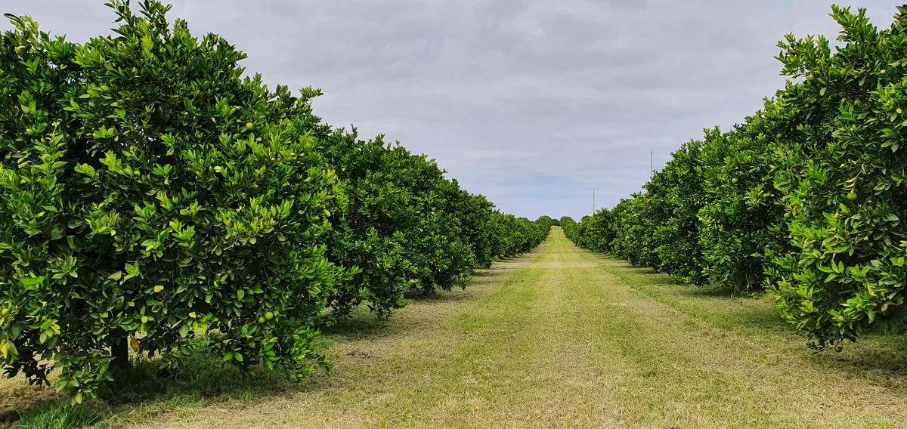

Fruit size and specification
Fruit size and the spread of sizes affect how much can be packed into the required grades.

Citrus trees can carry new growth, flowers and fruit at the same time. We develop custom prescription blends with that in mind, using your soil and plant results together with the variety and crop load in your block.
Fruit grade and pack-out come first when we plan your prescription nutrition. We use your test results, variety and block history to plan for the size and fruit condition your market requires.
Fruit size and the spread of sizes affect how much can be packed into the required grades.
Fruit finish and damage affect its grade and the amount that can be packed for the intended market.
Rind colour does not establish harvest readiness on its own. Juice content, soluble solids and acidity are assessed against the requirements of the variety and intended market.
The quantity harvested and the share that meets the required grade help assess the season. The team uses grading results when reviewing the block’s prescription.
We need to understand the variety, current growth and fruit on the trees when interpreting the results. We then work with you on a prescription that suits your orchard, equipment and budget.
The market you supply sets the fruit specification. Grading shows how much of the harvest meets it.
We need to know the variety and rootstock, crop load and condition of the canopy. New shoots, flowers and fruit may be present at the same time.
The team reviews soil results with root-zone conditions and water quality. Any ground, foliar or fertigation recommendation needs to suit the equipment used.
We need to know which growth flush and tissue were sampled. Earlier applications, harvest timing and any fruit still on the trees also help us plan the next prescription.
There is not yet a Citrus booklet to download. You can explore the sample program below, which follows the crop’s development with photographs and application rates to discuss with us.
For advice specific to your orchard, bring your existing results and tell the team what you grow.


Bring your soil results to the team to discuss a custom dry or granular prescription blend.
Leaf and sap results help the team review a liquid prescription blend. Tell us what you have already applied and what is growing or fruiting now.
A standard leaf sample and a paired young-and-old DSA sample are different. Follow the instructions for the test being requested and keep those sample details with the result.
The following stages explain how we review the crop through the season. They are not fixed application dates; timing depends on the variety, region and development of the trees.
Citrus retains its canopy through winter. Soil results and previous applications guide a dry or granular prescription, with the crop still carried and root-zone conditions considered before spring growth.
New shoots, leaves and flowers can develop together. Older leaves and stored carbohydrates help supply early growth. Read the plant results with the actual flush and flowering present, rather than following a fixed month.
A large number of flowers does not establish the final crop. Some young fruit is naturally shed after flowering. The fruit retained and the condition of the trees provide context for interpreting the results.
Young fruit develops through cell division and then enlargement. The canopy supplies carbohydrates to the crop, and a further growth flush may occur. Crop load and water supply matter when reviewing the liquid prescription.
Rind colour is only part of the picture. Juice content, soluble solids and acidity help assess maturity against the variety and intended market. Review any remaining applications with current product directions.
The canopy remains after picking, and later varieties may have little time before the next growth flush. Harvest and pack-out information, any fruit still carried and test results help guide the next prescription.
Use the block’s results and history to work out what a prescription needs to address.
Review the crop the trees are carrying, current growth and the soil and plant results available.
Compare previous results and applications with recent conditions and the harvest and pack-out information you have.
Agree a prescription that suits the block, your application method and budget, with any further testing discussed with the team.